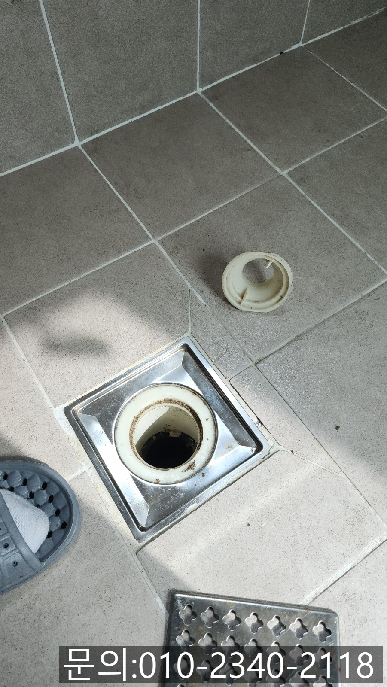
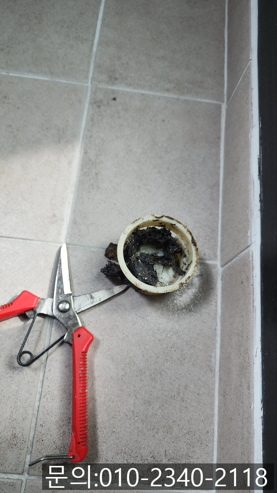
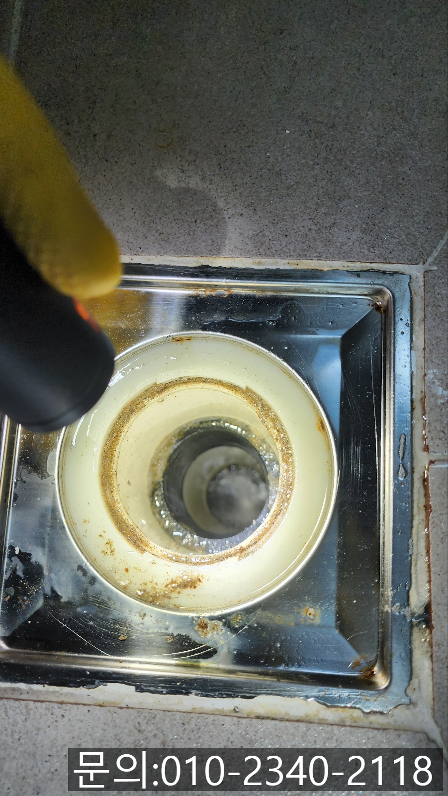
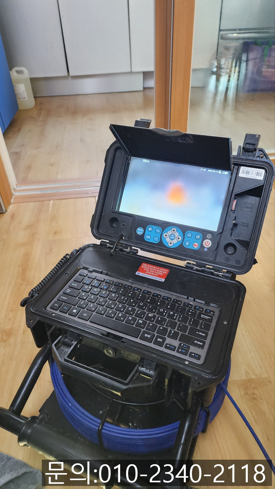
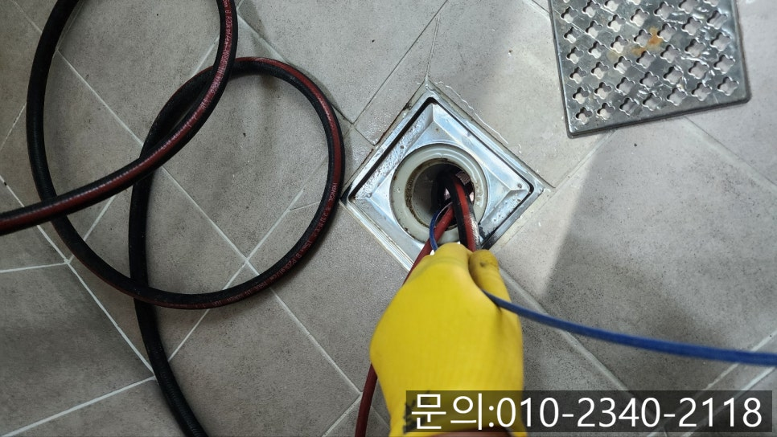
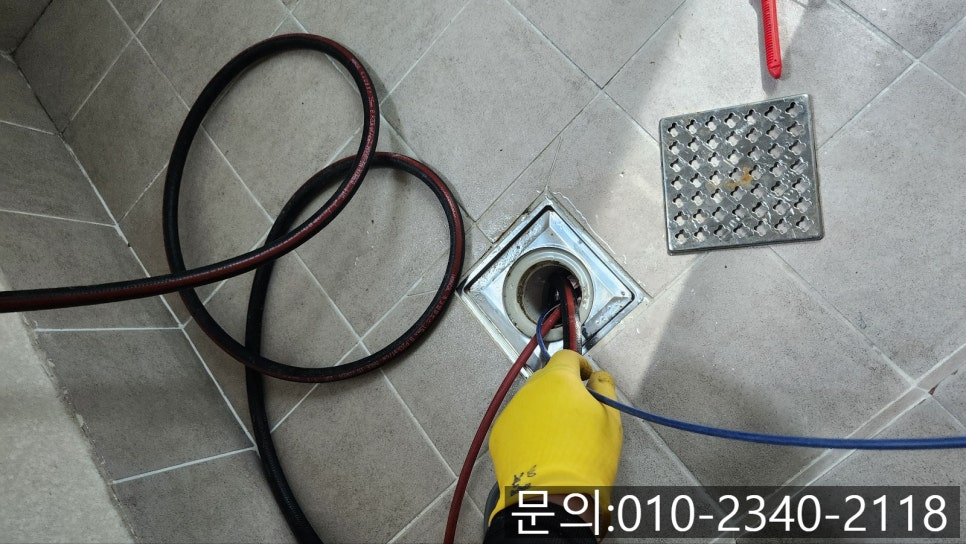

🏠 장호원읍 하수구 막힘 이천 호법면 화장실 바닥 배관 뚫는 전문 업체
용인 하수구막힘 전문 시공 후기

📋 작업 개요
- 위치: 용인
- 서비스 유형: 하수구막힘, 배관막힘, 누수수리, 역류해결, 뚫는업체, 배관청소
- 작업 일시: 2025. 4. 27. 18:33
- 업체명: 하수구수사대 (010-5615-2118)
🔍 문제 상황
안녕하세요.
장호원읍 하수구 막힘, 이천 호법면 화장실 바닥 배관 뚫는 전문 업체 하수구 다큐입니다.
화장실을 사용하다 보면 바닥에 위치해있는 하수구에 물이 잘 빠지지 않거나 고여있는 걸 경험하신 적 있으실 겁니다.
사용한 물이 배수구로 빠져나가는 속도가 느려지거나 심하게는 역류까지 일어난다면 바닥 배수구 막힘을 생각해 봐야 합니다.
오늘은 화장실 바닥 막힘의 주요 원인부터 간단한 해결 방법, 예방하는 팁까지 설명해 드릴게요.
화장실 바닥 막힘의 원인
머리카락과 먼지
샤워하면서 빠진 머리카락과 함께 먼지가 배수구로 흘러들어가면서 뒤엉키고, 점점 덩어리가 커져 물의 흐름을 방해하게 됩니다.
2. 비누 찌꺼기

🔎 원인 분석
💡 전문가 진단: 정밀 진단 장비를 사용하여 슬러지의 고착 여부를 판명하고 타격/세척 작업을 실시했습니다.
비누, 샴푸 등이 배수구 안쪽에 남으면서 찌꺼기들이 생기고, 이 찌꺼기들이 흘러들어간 먼지나 머리카락과 뒤엉켜 막힘을 악화시킵니다.
3. 이물질
실수로 휴지나 작은 이물질이 빠져 배관을 막아 하수구 막힘이 발생하게 됩니다.
4. 배관 노후화
오래된 건물의 경우 배관 내부에 녹이 슬거나 균열이 생겨 물의 흐름이 원활하지 않을 수 있습니다.
해결하는 방법
배수구 커버 분리 후 이물질 제거
화장실 바닥에 설치되어 있는 배수구 덮개를 열고 쌓여있는 머리카락이나 먼지 등의 이물질을 제거해야 합니다.
2. 베이킹 소다와 식초의 활용
베이킹 소다를 배수구에 한 컵 정도 뿌린 다음 그 위에 식초를 부어주고 30분 정도 경과된 다음 뜨거운 물로 헹궈주면 좋습니다.

🔧 작업 과정
막힘을 예방하는 방법
2주에 한 번 정도 배수구에 쌓인 머리카락과 먼지를 제거해 주세요.
거름망을 설치하여 이물질이 배관으로 흘러들어가지 않게 해주셔야 합니다.
사용한 비누나 세제 찌꺼기가 쌓이지 않게 물로 잘 헹궈주셔야 합니다.
화장실 바닥이 막히게 되면 조금 불편할 것 같지만 방치하게 되면 악취, 아래층으로 누수까지 이어질 수 있어 원인을 파악하고 대처하시는 것이 중요합니다.
오늘은 장호원읍 하수구 막힘으로 연락을 받고 다녀온 현장을 소개해 드릴게요.
화장실 청소를 하면서 사용한 물이 빠지지 않아 직접 뚫어보려 하셨지만 잘되지 않는다고 연락을 주셨습니다.
필요한 장비를 챙겨 현장에 방문해 보니 배수구에 설치해놓으셨던 거름망도 꺼내져있는 상태였어요.
이것만 봐도 고객님께서 직접 해결하기 위해 노력하신 모습을 알 수 있었습니다.
조명으로 화장실 바닥에 위치한 배수구를 비춰보니 어렵지 않게 이물질을 확인할 수 있었어요.
하지만 근본적인 원인을 파악하기 위해 내시경 카메라를 진입시켜 문제를 파악해 보기로 했어요.
내시경 카메라가 내부를 촬영하자 기름 슬러지와 석회 등 각종 이물질이 쌓여 있는 상태였습니다.
원인을 파악했으니 이천 호법면 화장실 바닥 배관 뚫는 전문 업체 하수구 다큐는 하수구 전문 장비를 이용해 이물질을 제거하기로 했습니다.
이천 호법면 화장실 바닥 배관 뚫는 전문 업체 하수구 다큐는 플렉스 샤프트 장비를 사용해 이물질을 작게 부셔 제거하는 작업을 진행했습니다.
꽉 막고 있던 이물질들이 조금씩 제거되기 시작하면서 통수가 이루어지니 내부의 모습이 선명해지기 시작했어요.


✅ 작업 완료
하지만 잔여 이물질이 남아있어 카메라로 확인해가면서 청소를 진행했습니다.
배관 스케일링이 모두 끝나고 깨끗해진 배관의 내부를 확인할 수 있었고요.
마지막으로 많은 양의 물을 흘려보내며 다른 문제는 없는지 통수 테스트까지 마치고 철수할 수 있었습니다.
경기도 용인시 수지구 수지로342번길 32 5층 508호 에이치01




⚠️ 베란다 누수 및 방수 관리 방법
- ✅ 비가 많이 올 때 창틀 주변이나 아래층 천장에 얼룩이 생기는지 정기적으로 확인해 보세요.
- ✅ 우수관 주변 실리콘 마감이 들뜨거나 깨진 틈새가 있는지 손상 여부를 수시로 체크하세요.
- ✅ 베란다 바닥 타일의 줄눈(메지)이 소실되면 그 틈으로 물이 침투하여 누수가 유발됩니다.
- ✅ 누수 의심 증상 발견 시 방치하면 아래층 손실이 커지므로 즉시 전문가의 진단을 받으십시오.
💡 핵심 정리
- 확실한 장비 작업(내시경 점검 및 샤프트 스케일링)으로 원인을 뿌리 뽑습니다.
- 작업 후 1년 이내에 동일한 부위 재발 시 100% 무상 A/S 서비스를 보장합니다.
- 서울 · 경기 · 인천 전 지역에 24시간 언제든 긴급 출동할 수 있도록 항시 대기 중입니다.
❓ 자주 묻는 질문 (FAQ)
🚨 용인 하수구막힘 문제로 고민이신가요?
정확한 원인 진단과 확실한 시공으로 재발 없는 해결을 약속드립니다.
24시간 긴급 출동 | 서울 · 경기 · 인천 전지역 | 1년 내 재발 시 무상 A/S